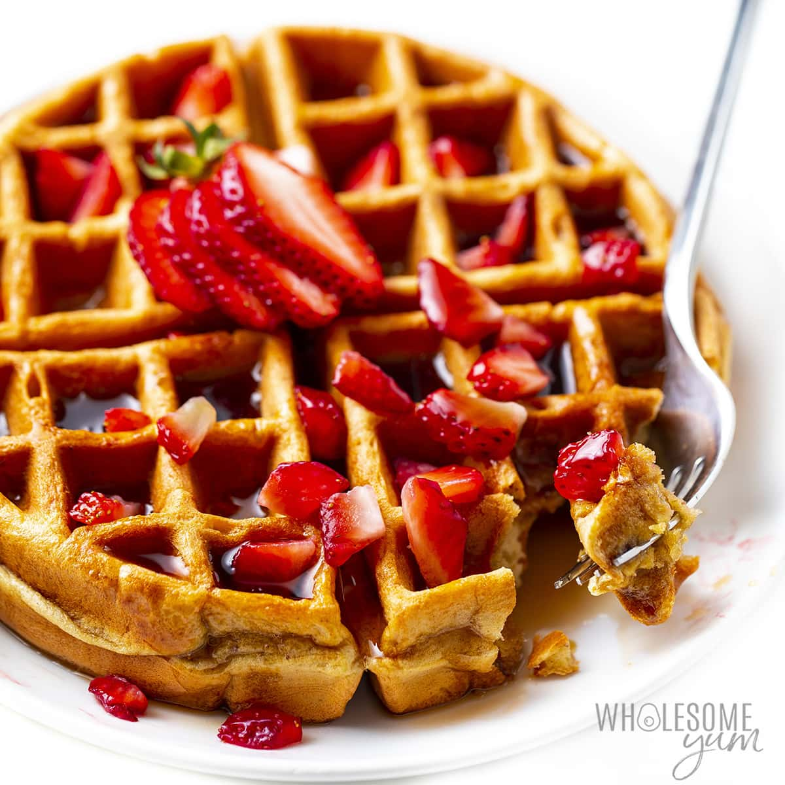

Description
These healthy, protein-packed waffles are fluffy and delicious! No waffle iron? No problem! Make them into pancakes instead. Top with berries, bananas, dark chocolate chips, or anything else you like!

Ingredients
- 1 cup old-fashioned oats
- 1 cup cottage cheese
- 2 eggs
- 3 egg whites
- 1 teaspoon honey
Directions
- Preheat a waffle iron according to manufacturer's instructions.
- Blend oats, cottage cheese, eggs, egg whites, honey, vanilla extract, and cinnamon in a blender until creamy.
- Ladle batter into preheated waffle iron according to manufacturer directions and cook the waffles until golden and crisp, about 5 minutes. Repeat until entire batch of batter is used.
Back to top
Back to Home page